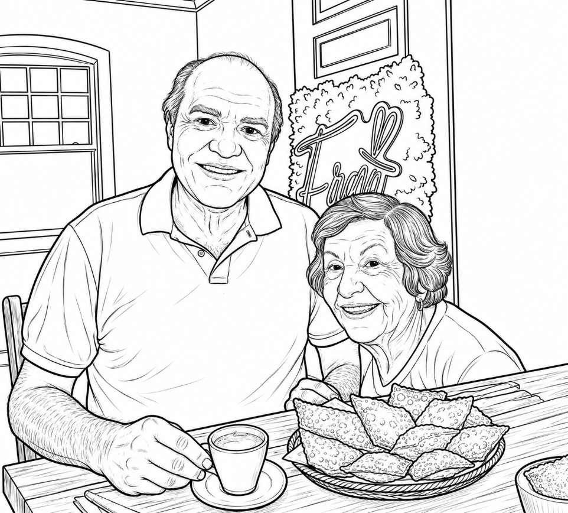

Pastel de Carne Moída
Ingredientes: Para a Massa:
3 xícaras de farinha de trigo
1 xícara de água morna 1 colher (sopa) de óleo
1 colher (sopa) de cachaça (o segredo para a massa crocante) 1 colher (chá) de sal
Para o Recheio de Carne:
500g de carne moída (patinho ou lagarto)
1 cebola bem picadinha
2 colheres (sopa) de azeite Azeitonas picadas Tomates picados sem pele
Cheiro-verde fresco picadinho a gosto Sal e pimenta-do-reino a gosto
Modo de Preparo:
- Em uma panela, aqueça o azeite, acrescente a carne moída e refogue com cebola e tomates sem pele até ficar bem soltinha e sequinha. Tempere com sal, pimenta e finalize com bastante cheiro-verde. Desligue o fogo e deixe o recheio esfriar completamente antes de rechear os pasteis.
- A Massa Crocante: Em uma tigela, misture a farinha e o sal. Faça um buraco no meio e adicione a água morna, o óleo e a cachaça. Amasse bem até obter uma massa lisa e homogênea. Deixe descansar por cerca de 20 a 30 minutos coberta com um pano.
- A Montagem: Abra a massa bem fina com o rolo, coloque porções generosas de recheio de carne e azeitonas, dobre e feche as bordas apertando com um garfo para não abrir.
- Fritar e Servir: Frite em óleo bem quente até dourar e formar bolinhas crocantes. Retire, escorra em papel absorvente e sirva bem quentinho para o Genivaldo e toda a família!
